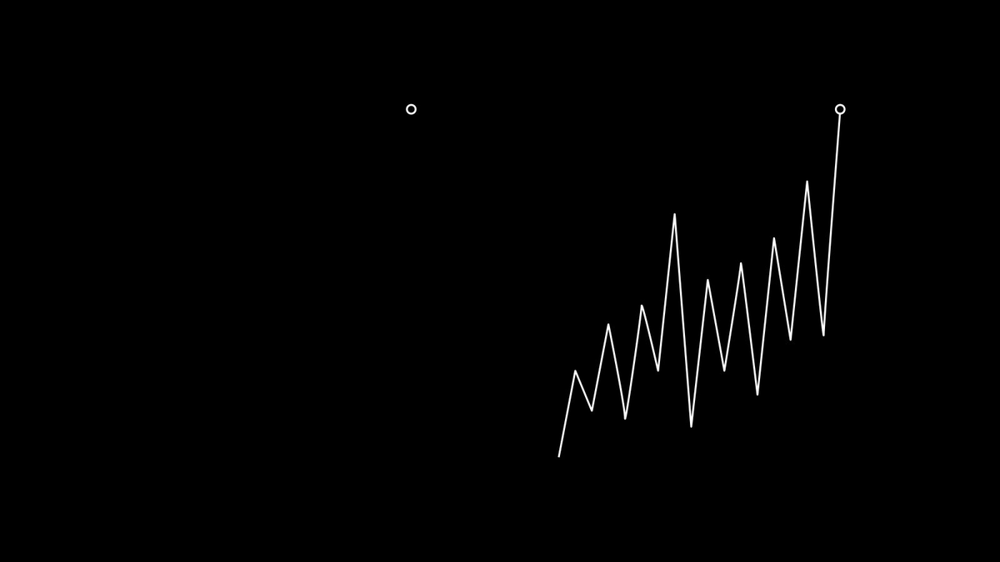

如何选公司
王福强
缘起有同学让我谈谈怎么选公司，当然， 主要是面向求职者，尤其是高层职位，比如CTO，所以，这里的选公司不是讲投资，虽然也多少有些相通的东西。
我觉得主要是看三点， 即行业、公司、创始人。
行业
行业跟行业的差距是很大的，这个是Big Picture，从一开始就选择了好的行业， 那么后面的发展就会事半功倍，这就是电梯选对了，你怎么折腾，都可以更快的到达高层。
中国前面三四十年的经济高速发展期，如果你选择了互联网、房地产、金融等行业，那么，你选到好公司概率就更大一些，否则，那么薪资差距几十倍都不为过。
将来会是什么行业？ 新能源汽车肯定是肉眼可见的（当然，也不排除灯下黑）， 其它的你们一定比我清楚。
公司
即使选择了好的行业，但行业里的公司也是千差万别，就跟我在《深度思考揭秘》1里跟大家说的那样，任何人或者组织都是有层级的（或者圈层），根据马太效应的说法，你选了前三甚至头部第一，跟你选了其它的公司，那差距更是天壤之别。
- 同样是电商，你选了易趣，还是选了淘宝，甚至选了某些不知名的电商公司，那差距指定不是一点两点；
- 同样是金融，你选择了网商银行或者蚂蚁，那短期内的汇报也要比其它金融机构多（当然，大环境的问题咱不好说）；
- 同样是房产中介，你选了当初的贝壳，跟你选了什么乱七八糟的中小中介，那也注定不一样；
老话说的好啊，“人往高处走，水往低处流”，有能力， 有野心，有抱负，那你只要盯着行业头部去就好了，道理真得很简单。
创始人
一家公司最大的天花板就是创始人，所以，选公司的时候，如果这家公司还没有成为头部，或者你暂时还没有符合头部的要求，那么，这个时候双方都存在某些限制，在这些限制的前提下， 你如果能够跟对人（不是什么人都行，创始人），那么，也是可以收获不菲的回报的。
比如没起来时候的头条，比如没起来时候的拼多多，比如湖畔时代的阿里，只可惜，大多数人都只是看到结果，所以，这， 很难。

后话
还有一点，尤其是对于高层来说，双方之间有没有化学反应其实更重要，也就是你和创始人之间的关系，除非你就是搞搞投机，整点儿“打手费”，否则，长期关系对你们双方来说都很重要，但这个东西不是一次两次见面聊就可以搞清楚的，尤其是大家没有真正合作之前，还在bargain的时候也大都互相装，所以，最好的策略是周边先了解下，最后再通过此后长期的合作来探察与磨合。
很多时候，化学反应啦，能量啦，这些东西听着挺玄乎，但真正经历过你就不会觉得， 不信邪可以自己多亲身试试；）
当然，也欢迎读下我的这本《坑获》 2，或许也可以帮你减少试错成本，增加收益几率。
「为AI疯狂」星球上，扶墙老师正在和朋友们讨论有趣的AI话题，你要不要⼀起来呀？^-^
这里
- 不但有及时新鲜的AI资讯和深度探讨
- 还分享AI工具、产品方法和商业机会
- 更有体系化精品付费内容等着你，加入星球(https://t.zsxq.com/0dI3ZA0sL) 即可免费领取。(加入之后一定记得看置顶消息呀！)

开天窗，拉认知，订阅「福报」，即刻拥有自己的全模态人工智能。